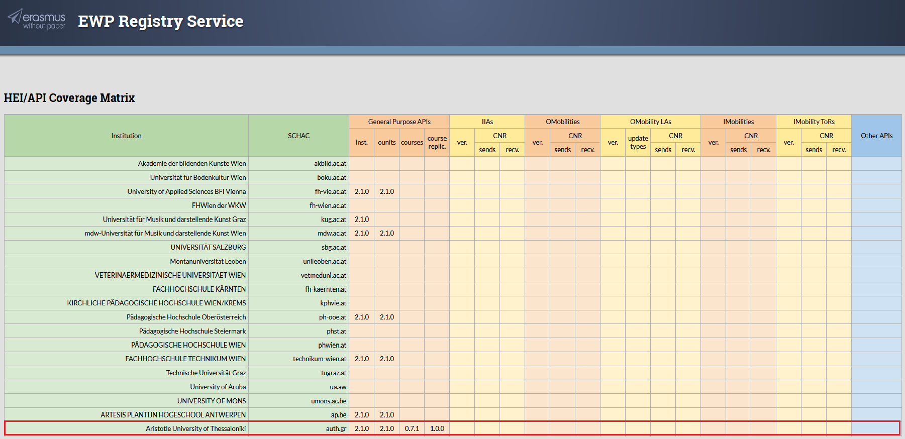
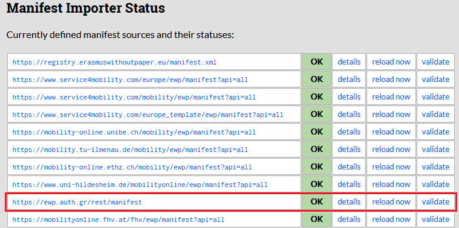

AUTH in the EWP Network
Maria Tsiakmaki | Argyris Besinas | Konstantinos Karaoglanoglou
IT Center of AUTH

Intro
Erasmus Without Paper (EWP) is a project co-funded by the European Commission targeting:
- Automation of student mobility processes
- Replacement of the paper-based workflow by a digital one
- Tackling the administrative workload for students and staff
- Creation of a free public infrastructure for academic institutions
Intro
The current ongoing project Erasmus Without Paper 2.0 will run throughout 2018 and 2019.
More attention is given to support universities that do not have IT-solutions.
Intro
Consortium of 14 partner institutions composed of public institutions, higher education organisations, and companies from 8 European countries along with 12 associate partners.
EWP Architecture
Consists of various entities as APIs.
- Institutions
- Organizational Units
- Courses
- Simple Course Replication
- Outgoing Mobilities
- Incoming Mobilities
- Learning Agreements
- Transcripts of Records
EWP Architecture
Each institution determines which of these APIs are going to be implemented.
EWP Registry Service
Catalogue which describes all the institutions and APIs implemented by them.
The Registry functions like a phonebook in the EWP network.
EWP Registry Service
HEI/API Coverage Matrix
Manifest File
Each institution publishes its manifest file in the EWP network.
The manifest contains all relevant information of the participant institution.
When modifications/changes occur in the manifest file, they are automatically reflected in the registry.
AUTH's Manifest FileManifest Importer Status
How Did AUTH Join the EWP Network
- Documentation (architecture, schemas, APIs, authentication/authorization, certificate signing)
- Collaboration of EUREP, IT Center of AUTh and QA units
- Implementation based on the EWP Reference Connector
- Publish manifest file
- Testing from both sides
Technical (and Other) Difficulties
- Difficulty in identifying who are the data-holders
- Data may not be available in the university's SIS
- Data could be dispersed over different application tools
- Need for a dedicated IT development team
What's Next for AUTH in the EWP Network
- Implementing more APIs - Contributing more data
- Fully integrate EWP in the existing mobility workflows used by EUREP
- Making the most of the data-exchange capabilities provided by the EWP
Links
Erasmus Without Paper - Competence Centre | https://cc.erasmuswithoutpaper.eu/
Architecture and Common Datatypes | https://github.com/erasmus-without-paper/ewp-specs-architecture
EWP Registry Service | https://registry.erasmuswithoutpaper.eu/
DEV Registry Service | https://dev-registry.erasmuswithoutpaper.eu/
Developers Hub - Specifications, Validators and Tools | https://developers.erasmuswithoutpaper.eu/
Github | https://github.com/erasmus-without-paper
LinkedIn group | https://www.linkedin.com/groups/13590744/
Thank you for your attention
Contact: kkaraogl@it.auth.gr